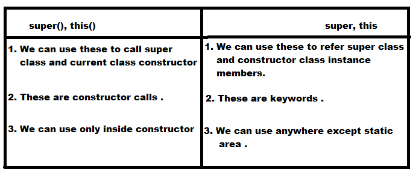

Constructor :
- After creation of an object compulsory we have to perform initialization .
- Whenever we are creating an object some piece of the code will be executed automatically to perform initialization of an object . This piece of the code is nothing but constructor .
- Hence the main objective of constructor is to perform initialization of an object .
Constructor vs Instance block
- The main objective of constructor is to perform initialization of an object .
- Other than initialization activity if we want to perform anything for every object creation we have to define that inside instance block .
- Both constructor and instance block will be executed for every object creation, but instance block first followed by constructor .
Rules for writing constructor :
- Name of the constructor and name of the class must be same .
- Return type is not applicable for constructor, even void also not applicable . But by mistake if we are declaring return type for the constructor then we won't get any compile time error or runtime errors . It is simple treated as a method
- The only applicable modifiers for constructor are : public, default, private, protected . , by mistake if we are using any other modifiers we will get compile time error .
Default constructor :
- Every class in java including abstract class contains constructor concept .
- If we are not writing any constructor then only compiler will generate default constructor .
- If we are writing atleast one constructor then compiler won't generate default constructor .
- Hence every class contain either programmer written constructor or compiler generated constructor but not both .
Prototype of default constructor :
- It is always no argument constructor .
- Access modifiers of default constructor is exactly same as class modifiers .(It is applicable either for public or default . )
- It contains only line e, super(); which is used to call super class no argument constructor .
- The first line inside every constructor should be either super() or this() . If we are not writing anything then the compiler will always generate super() .
- Case 1: we have to use super() or this() only in the first line of the constructor . If we are using anywhere we will get compile time error .
- Case 2: we can use either super() or this() but not both simultaneously .
- Case 3: we can use either super() or this() only inside the constructor . If we are using anywhere else we will get compile time error .
Note : We can call a constructor directly from another constructor by using this() or super()

Overloaded Constructors:
- A class can contain more than constructor and all these constructors should have the same name but different argument types .
Hence these constructors are considered as overloaded constructor .
- For constructor inheritance concept is not applicable and hence overriding concept is not applicable . But overloading concept is applicable .
- Every class in java including abstract class can contain constructors. But interface can not contain constructor .
Q: Abstract class contain constructor but we can not create object for abstract class, then what is the use of constructor ?
- Ans: Abstract class constructor will be executed whenever we are creating child object . This constructor is useful to perform initialization of child object .
- Whenever we are creating child object automatically parent class constructor will be executed, but parent class object won't be executed .
- Case 1: Recursive method call is always a RuntimeException saying StackOverflowError. Where as recursive constructor innovation is always a compile time error .
- Conclusion: If parent class contains some arguments constructor while writing child classes we have to take special case to write constructor .
- Case 3: If parent class constructor throws some checked exception compulsory child class constructor should throws the same checked exception or its parent .